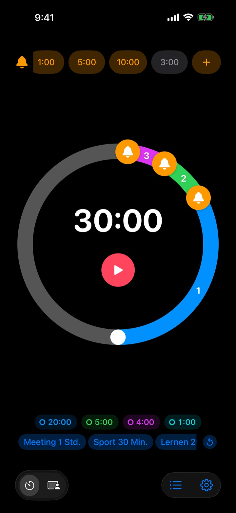
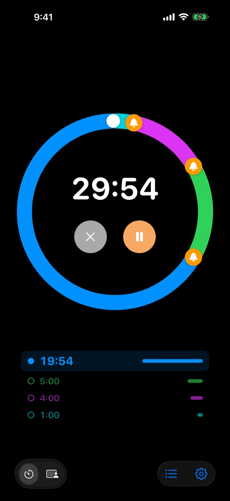
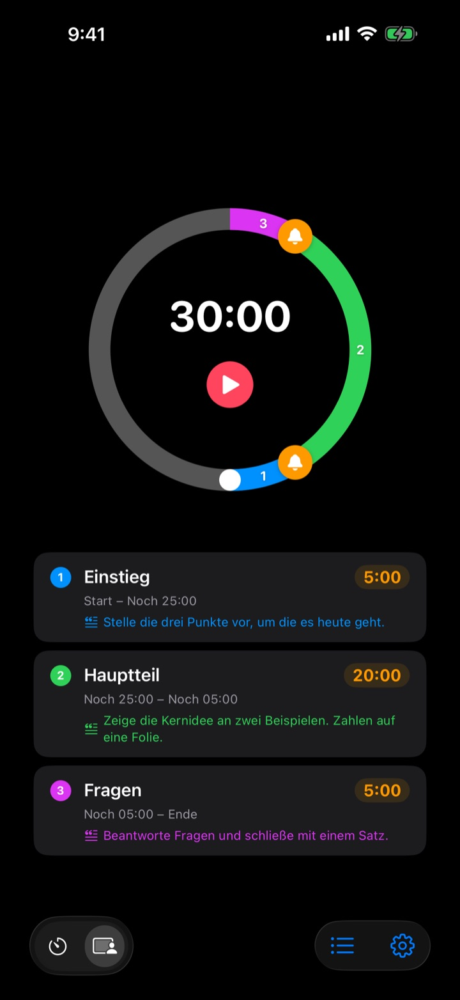
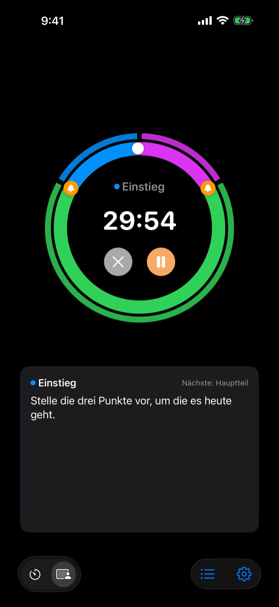

Nicht erst am Ende,
sondern davor
5 Minuten vor Ende des Vortrags, 3 Minuten bevor das Meeting schließt. Rereminder meldet sich an jedem Punkt, den du festlegst, und du musst nicht ständig auf die Uhr schauen.
Vorwarnungen sind kostenlos und unbegrenzt. Für iPhone, Apple Watch und Mac.

Gleich hier ausprobieren
Wähl eine Dauer und deine Vorwarnungen und drück auf den roten Knopf. Eine Minute vergeht in einer Sekunde, und bei jeder Vorwarnung hörst du ein Signal.
Schon mal einen Timer gehört, als es längst zu spät war?
Ein normaler Timer klingelt erst bei null. Der Vortrag ist vorbei, bevor du beim Fazit bist, die Stunde endet ohne Zusammenfassung, und das Meeting rutscht ohne Entscheidung in den nächsten Termin. Du brauchst kein Signal, dass die Zeit um ist, sondern eins, solange noch Zeit zum Abschließen bleibt.
Vorgewarnt, so oft du willst
Zieh die Glocken auf dem Zifferblatt auf 10, 5 oder 1 Minute vor Ende oder an jede andere Stelle. Es gibt kein Limit, und jede Vorwarnung kann ihren eigenen Text tragen, etwa „Folien abschließen“.
Auch bei ausgeschaltetem Bildschirm siehst du die Restzeit auf dem Sperrbildschirm und in der Dynamic Island, und die Apple Watch tippt dir aufs Handgelenk.

Teil deinen Vortrag in Abschnitte
Einstieg 5 Minuten, Hauptteil 20, Fragen 5. Gib jedem Abschnitt einen Namen und ein Skript. Bei jedem Wechsel wirst du mit dem Namen des Abschnitts erinnert, und dein Zeitplan hält wie von selbst. (Pro)

Was du gerade sagen willst, steht auf dem Bildschirm
Während er läuft, siehst du das Skript des aktuellen Abschnitts und was als Nächstes kommt, schön groß. Läufst du über null hinaus, zählt er weiter, damit du genau weißt, wie weit du überzogen hast. (Pro)

In drei Schritten startklar
- 1
Zeit einstellen
Dreh am Zifferblatt oder tipp auf die Zeit und gib sie ein. Eine Runde sind 60 Minuten, zwei Runden 120.
- 2
Vorwarnungen setzen
Tipp oben auf einen Chip wie 1:00 oder 5:00 oder zieh eine Glocke aufs Zifferblatt.
- 3
Starten und vergessen
Sperr dein iPhone. iPhone und Apple Watch melden sich zu jedem Zeitpunkt, den du gesetzt hast.
Beliebte Einstellungen
- Vortrag, 20 Minuten
- 5 Min. vorher „Zum Fazit kommen“, 1 Min. vorher „Danke sagen“
- Unterrichtsstunde, 50 Minuten
- 10 Min. vorher „Hausaufgaben erklären“, 3 Min. vorher „Zusammenfassen“
- Meeting, 30 Minuten
- 5 Min. vorher „Entscheidungen festhalten“
- Pilates- oder Yogastunde
- Session-Modus mit einem Abschnitt pro Übungsfolge (Pro)
- Lernblock, 25 Minuten
- 5 Min. vorher, danach Pause
- Satzpause, 3 Minuten
- 30 Sek. vorher „Nächsten Satz vorbereiten“
- Mentoring-Gespräch, 1 Stunde
- 15 und 5 Min. vorher
Was du oft brauchst, sicherst du als Vorlage und startest es mit einem Tipp (ab Merken). Mit Kurzbefehlen und Siri kannst du einen Timer auch starten oder stoppen.
Vorwarnungen sind kostenlos. Zahlen nur, wenn er sich etwas merken soll.
Kostenlos
- Unbegrenzt viele Vorwarnungen
- Eigener Text für jede Vorwarnung
- Live-Aktivität auf dem Sperrbildschirm und in der Dynamic Island
- Erinnern, bis ich reagiere, und zum Schluss als Alarm klingeln
- Apple Watch-App und Mac-Menüleiste
- Alle Designfarben
Merken · Pro
- Merken: Einstellungen als Vorlage sichern und mit einem Tipp starten
- Merken: beim nächsten Öffnen ist dein letztes Setup wieder da
- Pro: alles aus Merken plus Session-Modus mit Abschnittsnamen und Skripten
- Pro: Überziehungszeit, Verlauf und Statistik
Für beide wählst du jährlich oder einmal zahlen und für immer behalten. Session-Modus, Überziehungszeit und Verlauf kannst du vor dem Kauf ein paar Mal ausprobieren.
Keine Werbung. Mit einem Für-immer-Pass öffnest du außerdem alle Apps von Leeo.
Häufige Fragen
Eine Vorwarnung kam nicht.
Fast immer liegt es an Berechtigungen oder am Fokus. Prüf in der App unter Einstellungen › Mitteilungsart, ob Mitteilungen erlaubt sind. Nutzt du einen Fokus, füg Rereminder in den iOS-Einstellungen › Fokus als erlaubte App hinzu. Im Stummmodus gibt es nur Vibration. Steht Rereminder unter Einstellungen › Mitteilungen › Geplante Zusammenfassung, werden die Mitteilungen gesammelt und kommen zu spät, also nimm die App dort heraus.
Merke ich das Ende auch im Stummmodus?
Ja. Schalte „Zum Schluss als Alarm klingeln“ ein, dann klingelt es laut, auch im Stummmodus oder mit Fokus. Mit „Erinnern, bis ich reagiere“ meldet er sich so lange, bis du in der Mitteilung auf Stopp oder Schlummern tippst.
Meine Apple Watch synchronisiert nicht.
Öffne in der App Einstellungen › Meine Geräte. Dort siehst du, welcher Schritt fehlt. Die Watch muss mit diesem iPhone gekoppelt sein, Rereminder muss auf der Watch installiert sein, und du musst die App nach der Installation einmal auf der Watch öffnen. Danach kommt der Timer auch bei geschlossener Watch-App an.
Mein Mac wird als „nicht verbunden“ angezeigt.
„Verbunden“ heißt, dass die App in den letzten 10 Minuten auf diesem Mac geöffnet war. Ein gerade aufgewachter Mac erscheint daher erst nach ein paar Minuten. Beide Geräte brauchen denselben iCloud-Account mit eingeschaltetem iCloud Drive. Die Mac-App braucht macOS 26 oder neuer.
Ich habe bezahlt, aber nichts ist freigeschaltet.
Tipp im Tarifbildschirm auf „Käufe wiederherstellen“, angemeldet mit demselben Apple Account, mit dem du bezahlt hast. Einmalkäufe kommen auch nach dem Löschen der App oder auf einem neuen Gerät zurück.
Meine gesicherten Vorlagen sind gesperrt.
Sie sind noch da. Ohne Merken oder Pro bleiben sie gesperrt sichtbar und sind sofort wieder offen, sobald du eins davon kaufst.
Wie bekomme ich mein Geld zurück?
Erstattungen laufen über Apple. Beantrag sie auf reportaproblem.apple.com mit dem Apple Account, mit dem du bezahlt hast. War etwas kaputt, sag mir bitte auch Bescheid, damit es der Nächste nicht erlebt.
Kann ich es ohne Installation ausprobieren?
Öffne m1zz.github.io/rereminder auf deinem iPhone, dann läuft der Timer sofort als App Clip. Zifferblatt und Vorwarnungen sind dabei. Vorlagen, Session-Modus und die Watch-App gibt es in der vollen App.
Auf welchen Geräten läuft es?
iPhone ab iOS 26, Apple Watch ab watchOS 11.6 und Mac ab macOS 26. iPad wird noch nicht unterstützt. Die App gibt es in 24 Sprachen.
Wo bleiben meine Daten?
Timer, Vorlagen, Abschnittsnamen, Skripte und Verlauf bleiben auf deinem Gerät und verschwinden, wenn du die App löschst. Die App sendet nur anonyme Nutzungsstatistiken, die beim Verbessern helfen. Was genau, steht in der Datenschutzerklärung.
Fragen oder Feedback? Schreib an leeo@kakao.com. Ich antworte meist innerhalb von 2 bis 3 Tagen.